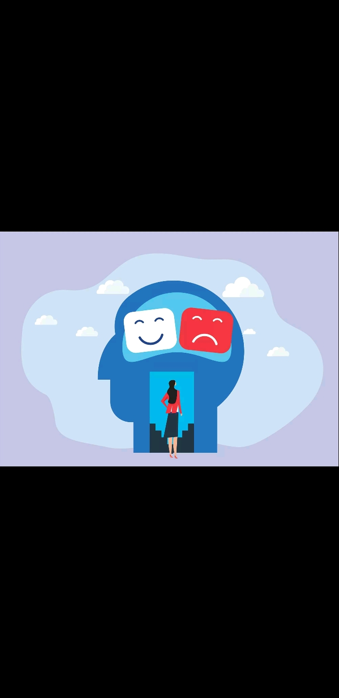

The Heart Behind Reclaim Life Foundation
I have started this foundation because of my personal experience in my mother's struggle. She was diagnosed with rectal cancer. She went through chemotherapy and radiation, which resulted in a permanent stoma.
— Unknown
I witnessed her pain, fear, and hesitation to open up about her condition, which made me realize how many others might be suffering in silence. I suffered from the emotional, financial, mental, and physical burdens caused by digestive system illnesses. My mother kept her illness a secret from all of us. I didn't know what she was going through until I decided to take action and find out for myself. I respected her privacy, but I also needed to understand her condition so I could provide the right support. The experience showed me how important it is to create a safe space where individuals facing digestive health issues feel understood and supported.
I realized how difficult it is to manage the condition, the stigma surrounding them, and the ongoing need for medical aid and support. I chose to focus on digestive health disorders because they are life altering, often stigmatized, and financially draining for patients and their families. Many organizations focus primarily on research, but few provide direct support to patients and families who are struggling. I want to change that by creating a safe space where they can receive the education, help, and support they need.
I want to ensure that no one has to struggle alone. This foundation is dedicated to providing hope and dignity to patients and families navigating these illnesses. We're deeply rooted in compassion, care, and advocacy, working to improve lives through medical aid, emotional support, and awareness. We aim to help people reclaim their life, hope, strength, and peace.
This is the calling God placed in my heart. God gave me the vision, the power, and the experience. Nothing will stop me from building this legacy.
Healing begins when you choose to face the truth, not run from it. It starts with acceptance. Acceptance doesn't mean you're okay with what happened, it means you are ready to take the first step towards reclaiming your life.